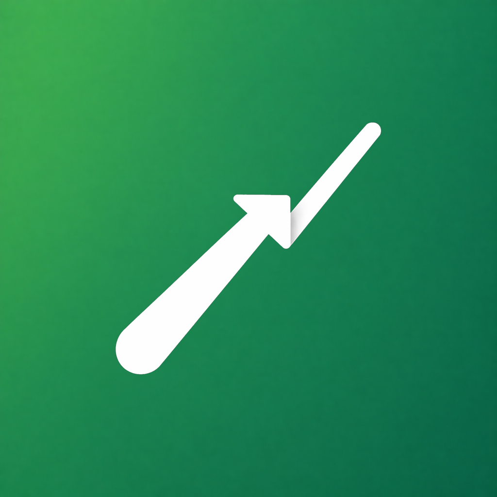

سياسة الخصوصية
Privacy Policy
توضّح هذه السياسة كيف يتعامل تطبيق احسم مع بياناتك. صُمم التطبيق ليعمل محليًا على جهازك، بدون حسابات أو تتبع أو تخزين سحابي.
This policy explains how the Decido app handles your data. The app is designed to work locally on your device, without accounts, tracking, or cloud storage.
1. معلومات التطبيق والمطور
1. App and Developer Information
يوضح هذا القسم المعلومات الأساسية الخاصة بالتطبيق والمطور المسؤول عنه.
This section provides the basic information about the app and its developer.
2. من نحن
2. About the App
احسم هو تطبيق يساعدك على مقارنة الخيارات واتخاذ قراراتك اليومية بوضوح، من خلال معايير وأوزان ونتيجة مرتبة، مع إمكانية حفظ القرارات محليًا والرجوع إليها لاحقًا.
Decido helps you compare options and make everyday decisions more clearly using criteria, weights, and ranked results, with the ability to save decisions locally and review them later.
3. البيانات التي لا نجمعها
3. Data We Do Not Collect
لا يتطلب تطبيق احسم إنشاء حساب، ولا يطلب منك إدخال اسمك أو بريدك أو رقم هاتفك لاستخدام التطبيق.
Decido does not require an account and does not ask you to enter your name, email address, or phone number to use the app.
- لا نجمع بيانات تعريف شخصية لاستخدام التطبيق الأساسي.
- لا نبيع بيانات المستخدمين.
- لا نستخدم تتبعًا إعلانيًا أو تحليلات داخل التطبيق.
- لا نستخدم خادمًا خارجيًا لتخزين قراراتك.
- We do not collect personal identifiers for the core app experience.
- We do not sell user data.
- We do not use advertising tracking or in-app analytics.
- We do not use an external server to store your decisions.
4. البيانات المحفوظة على جهازك
4. Data Stored on Your Device
لحفظ تجربتك داخل التطبيق، يتم تخزين بيانات التطبيق محليًا على جهازك فقط، مثل:
To keep your in-app experience working, app data is stored locally on your device only, such as:
- القرارات المحفوظة، الخيارات، المعايير، الأوزان، والنتائج.
- الملاحظات الاختيارية المرتبطة بالقرارات.
- حالة الأرشفة وتاريخها عند استخدام الأرشفة.
- عملة القرار كقيمة عرض فقط، دون تحويل أسعار.
- المسودات غير المكتملة لاستعادة آخر قرار لم يكتمل.
- إعدادات اللغة، المظهر، والعملة الافتراضية للقرارات الجديدة.
- Saved decisions, options, criteria, weights, and results.
- Optional notes attached to decisions.
- Archive status and archive date when archiving is used.
- The decision currency as a display value only, without currency conversion.
- Incomplete drafts used to restore the last unfinished decision.
- Language, appearance, and default currency settings for new decisions.
5. الإشعارات والتذكيرات
5. Notifications and Reminders
يتيح لك التطبيق تعيين تذكير محلي لمراجعة قرار لاحقًا. يتم إنشاء هذه الإشعارات وإدارتها على جهازك.
The app lets you set local reminders to review a decision later. These notifications are created and managed on your device.
- لا يُطلب إذن الإشعارات إلا عند إضافة تذكير لقرار.
- يمكنك إلغاء التذكير أو تعيين تذكير جديد من داخل التطبيق.
- عند حذف قرار، يتم إلغاء التذكير المرتبط به إن وجد.
- عند استيراد نسخة احتياطية، لا تتم استعادة التذكيرات كإشعارات مجدولة تلقائيًا.
- Notification permission is requested only when you add a reminder to a decision.
- You can cancel or reschedule a reminder from inside the app.
- When a decision is deleted, its associated reminder is canceled if one exists.
- When importing a backup, reminders are not automatically restored as scheduled notifications.
6. المشاركة والتصدير والنسخ الاحتياطي
6. Sharing, Export, and Backup
يوفر التطبيق خيارات محلية لمشاركة أو تصدير قراراتك عند اختيارك ذلك.
The app provides local options to share or export your decisions when you choose to do so.
- يمكن مشاركة نتيجة القرار كنص أو صورة عبر نظام المشاركة في جهازك.
- تضمين ملاحظة القرار في المشاركة اختياري ومغلق افتراضيًا.
- يمكن تصدير قرار واحد كـ PDF أو JSON.
- يمكن تصدير نسخة احتياطية JSON واستيرادها لاحقًا داخل التطبيق.
- عند الاستيراد، يتم فحص إصدار الملف وبنيته قبل حفظ أي بيانات.
- يتم تخطي القرارات المكررة، واستبعاد المسودات غير المكتملة، وعدم استيراد التذكيرات كإشعارات مجدولة.
- You can share a decision result as text or an image using your device’s share system.
- Including the decision note in sharing is optional and turned off by default.
- You can export a single decision as PDF or JSON.
- You can export a JSON backup and import it later inside the app.
- When importing, the file version and structure are checked before any data is saved.
- Duplicate decisions are skipped, incomplete drafts are excluded, and reminders are not imported as scheduled notifications.
7. الصلاحيات والوصول للملفات
7. Permissions and File Access
قد يستخدم التطبيق منتقي ملفات النظام عندما تختار استيراد نسخة احتياطية JSON. يمنح منتقي النظام التطبيق وصولًا مؤقتًا إلى الملف الذي تختاره فقط.
The app may use the system file picker when you choose to import a JSON backup. The system picker gives the app temporary access only to the file you select.
- لا يحتاج التطبيق إلى صلاحيات تخزين واسعة لاستيراد ملف تختاره بنفسك.
- لا يقرأ التطبيق ملفات أخرى من جهازك دون اختيارك.
- قد يحتاج التطبيق إلى إذن الإشعارات فقط عند إضافة تذكير.
- The app does not require broad storage permissions to import a file you choose.
- The app does not read other files from your device without your selection.
- The app may need notification permission only when you add a reminder.
8. مشاركة البيانات مع أطراف خارجية
8. Sharing Data with Third Parties
لا يشارك تطبيق احسم قراراتك أو بياناتك المحلية مع أطراف خارجية. لا توجد مزامنة حسابية أو خادم خارجي لتخزين قراراتك داخل التطبيق.
Decido does not share your decisions or local data with third parties. There is no account sync or external server used to store your in-app decisions.
الاستثناء الوحيد هو ما تختار أنت مشاركته أو تصديره أو إرساله يدويًا باستخدام تطبيقات أو خدمات خارجية على جهازك.
The only exception is what you choose to share, export, or send manually using external apps or services on your device.
9. حذف البيانات
9. Deleting Data
يمكنك حذف قرار واحد أو حذف جميع القرارات من داخل التطبيق. عند حذف جميع القرارات، يتم حذف القرارات النشطة والمؤرشفة وأي مسودات غير مكتملة، ولا يؤثر ذلك على إعدادات اللغة أو المظهر.
You can delete a single decision or delete all decisions from inside the app. When deleting all decisions, active and archived decisions and any incomplete drafts are deleted, while language and appearance settings are not affected.
عند وجود عدد كبير من القرارات، قد يطلب التطبيق كتابة كلمة تأكيد لتقليل خطر الحذف بالخطأ.
When there are many decisions, the app may ask you to type a confirmation word to reduce the risk of accidental deletion.
10. خصوصية الأطفال
10. Children’s Privacy
التطبيق لا يطلب إنشاء حساب ولا يجمع معلومات شخصية مباشرة. إذا كنت ولي أمر وتعتقد أن طفلاً أرسل معلومات شخصية عبر وسيلة خارجية، يمكنك التواصل معنا لطلب المساعدة.
The app does not require an account and does not directly collect personal information. If you are a parent or guardian and believe that a child sent personal information through an external method, you may contact us for assistance.
11. أمان البيانات
11. Data Security
لأن بياناتك محفوظة محليًا على جهازك، فإن أمانها يعتمد أيضًا على أمان جهازك ونظام التشغيل. ننصح باستخدام قفل شاشة وتحديث نظام الجهاز بانتظام.
Because your data is stored locally on your device, its security also depends on your device and operating system security. We recommend using a screen lock and keeping your device updated.
12. تغييرات سياسة الخصوصية
12. Changes to This Privacy Policy
قد يتم تحديث هذه السياسة عند إضافة ميزات جديدة أو تحسين طريقة توضيح الخصوصية. عند حدوث تغيير مهم، يمكن تحديث هذه الصفحة أو الإشارة إلى ذلك داخل التطبيق.
This policy may be updated when new features are added or when the privacy explanation is improved. If an important change occurs, this page may be updated or the change may be mentioned inside the app.